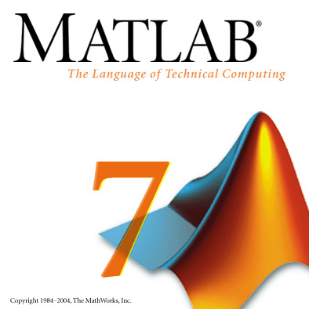

Matlab Simulation

Matlab is a powerful software programming tool that allows you to model, among other things, physical motion. Throughout the course of the quarter, we learned how to write Matlab code, learning control structures such as for loops, if statements, and while loops. We also learned how to use arrays and matrices to hold lots of data in a single variable. The homework assignments prepared us for the project, teaching us how to use Euler's method to approximate physical motion while taking in to effect air resistance and lost energy due to collisions.
Follow the links below to learn more about our Matlab simulation:
Home | Project Description | All about our team | Matlab simulation | Working Model simulation